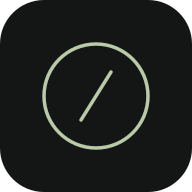

Un momento, per te.

Il tempo che scegli
Un po' di ordine. Senza fretta.
A modo tuo
Auto segue il dispositivo. Con una località puoi anche usare Segui il sole.
La foto resta su questo dispositivo.
Foto da Picsum. Senza rete resta l’ultima disponibile.
Tre misure semplici, come nelle versioni precedenti: piccolo, normale e grande.
Classic mantiene il carattere originale di Istante. Excalifont rende più editoriali frasi, titoli e momenti principali.
Casuali, senza ripetizioni ravvicinate.
Il pensiero resta stabile nella sua fascia oraria.
Errori e correzioni sono solo visivi. La frase salvata non cambia.
Meteo, alba e tramonto in una sola riga.
La posizione è facoltativa e resta salvata solo qui.
Open-Meteo · GeoNames . Il sole continua a funzionare anche offline.
Riduce gli effetti per dispositivi meno potenti.
Effetti discreti, lontani dal testo.
Il meteo automatico usa dati recenti; gli effetti manuali sono decorativi.
Con movimento ridotto, gli effetti restano più statici.
Radio attiva con Play, timer o programmazione.
Fino a 20 fasce, anche oltre mezzanotte.
Salva le fasce e autorizza l'audio.
Radio, ambiente e melodie non suonano insieme.
Le modifiche valgono dai prossimi timer.
Segue l’orologio del dispositivo. Con la pagina sospesa il rintocco non è garantito.
Oppure scegli una distanza da oggi.
Mostra quanto manca al tuo traguardo.
Sul calendario lo swipe cambia mese o settimana. Il ritorno alla dashboard con gesto avviene solo dalla fascia bassa dello schermo.
Fino a 8 calendari ICS, attivi insieme.
Esporta o ripristina il tuo Istante in un file JSON.
Il file non viene caricato su un server. Non include fotografie, cache meteo, file audio o timer in corso. Prima dell'esportazione salva eventuali modifiche aperte.
Prenditi un momento per te.
Una dashboard e uno screensaver che ti fanno compagnia dalla mattina alla sera: musica leggera, pensieri da ritrovare e il tempo che ti separa dal tuo prossimo obiettivo. Sullo schermo che preferisci, un piccolo spazio per respirare.
istante.ruslan-dzyuba.it
Un progetto di Ruslan Dzyuba .
Preparazione della copia offline...
Verifica degli aggiornamenti...
Quando è disponibile una nuova versione, scegli tu quando installarla. Se non aggiorni manualmente, dopo 3 giorni dalla prima rilevazione l’aggiornamento parte automaticamente.
Verifico la protezione dei dati locali...
Sorgente disponibile per uso non commerciale. Istante di Ruslan Dzyuba.
Preferenze, foto e raccolta restano in questo browser. Foto, meteo e radio usano servizi esterni solo quando richiesti. Nessun tracciamento aggiunto da Istante.
Prenditi un momento
Adesso--:--
Solo il tempo, senza avviare un audio.
Il cielo, adesso
I dati restano leggeri e vengono letti solo quando servono.
Il prossimo capitolo
Parole da tenere con te
1000 piccoli promemoria.
Le raccolte
Ogni card mostra subito se una raccolta è in uso, già sul dispositivo o ancora da scaricare.
Nessuna raccolta con questo stato.
Nessuna frase trovata.
Una raccolta tutta tua
La raccolta nasce vuota. Dopo averla creata potrai aggiungere le frasi una alla volta.
La tua raccolta
La raccolta è vuota. Aggiungi la prima frase.
Il tuo suono
Aggiungi, elimina e salva le tue stazioni preferite.
Nessuna stazione in questa vista.
Serve un flusso audio diretto compatibile con il browser.
Un pensiero da portare con te
Scegli il formato e cosa portare nella cartolina. Lo sfondo attuale e la scena della Dashboard vengono mantenuti.
Preparo il tuo istante...
Il tuo schermo può fare meno. E darti di più.
Istante trasforma uno schermo acceso in un punto di calma: il tempo resta visibile, una frase ti accompagna, il cielo segue la giornata e il tuo prossimo traguardo rimane vicino senza diventare un'altra lista di cose da fare.
Ti riporta al presente. Un pensiero, un timer e piccoli rituali aiutano a creare pause vere tra una cosa e l'altra.
Dà forma al tempo. Orologio, calendario, prossimo impegno e traguardi tengono vicino ciò che conta, senza trasformare lo schermo in una lista di notifiche.
Crea la tua atmosfera. Musica lo-fi, suoni offline, luce, meteo e sfondi possono rendere una scrivania, un tablet o uno schermo dedicato un posto più piacevole.
Puoi usarlo come dashboard, screensaver o piccolo angolo di decompressione. Le preferenze restano sul tuo dispositivo.
Il tuo spazio, ritrovato
Il ripristino sostituisce le preferenze, il traguardo, le stazioni e i preferiti di questo browser. La pagina si ricarica e l'audio si ferma. I timer in corso non vengono trasferiti.
Un pensiero arrivato fino a te
Una frase condivisa da un'altra persona. Non modifica la tua raccolta.
I giorni da portare con te
0 calendari salvati · puoi tenerne fino a 8 insieme.
Link HTTPS/webcal se il fornitore consente la lettura dal browser.
I link privati possono contenere una chiave di accesso: sono memorizzati solo in questo browser. Non condividerli. La sincronizzazione è in sola lettura, ogni 30 minuti mentre la pagina è aperta.